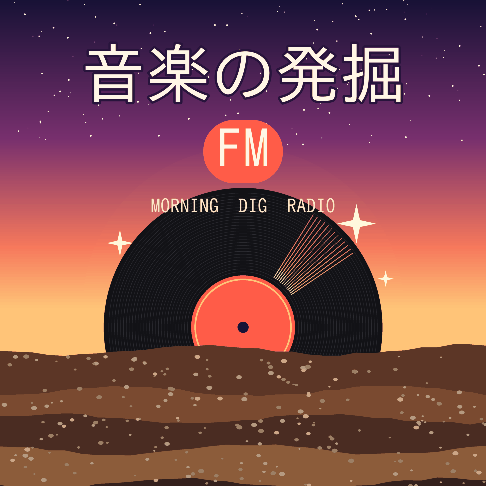

毎朝ひとつ、きみのためのアルバムを発掘するラジオ
Podcastアプリに登録するURL: https://yuukitakuwan-cpu.github.io/music-fm/feed.xml
音楽の発掘FM、第3回。日本のメロコアから少し海を渡って、アメリカのエモの名盤へ。ボーカルの熱さと、手紙を読むような物語性。
今日の一枚：The Get Up Kids『Something to Write Home About』（1999年）
Apple Music：https://music.apple.com/jp/album/something-to-write-home-about/1450931751
2枚目のスタジオアルバム。キーボードのJames Deweesが初参加した作品で、リリース元のVagrant Recordsがエモシーンで大きな存在になるきっかけにもなった一枚。
おすすめ：「Holiday」「Valentine」「I'll Catch You」— 通しで聴いてね。
感想はラジオネームを添えて送ってね。番組で読み上げて、次の選曲に活かします。
音声：VOICEVOX:春日部つむぎ
音楽の発掘FM、第2回。初めてのお便りコーナー！ラジオネーム「しらす丼」さんの感想を受けて、疾走感の中に哀愁と懸命さ、そして物語を感じる一枚を選びました。
今日の一枚：HAWAIIAN6『BEGINNINGS』（2005年／PIZZA OF DEATH RECORDS）
Apple Music：https://music.apple.com/jp/album/beginnings/1742518936
Hi-STANDARDの横山健が立ち上げたレーベルからリリースされた全11曲。dustbox・locofrankとのスプリット作品もあるバンドです。
おすすめ：「THE LIGHTNING」「RAINBOW, RAINBOW」— できれば曲順どおり通しで。
感想はラジオネームを添えて送ってね。番組で読み上げて、次の選曲に活かします。
音声：VOICEVOX:春日部つむぎ
音楽の発掘FM、第1回。1996年に埼玉で結成されたメロディックパンクバンド、dustboxのメジャーデビュー前の一枚。
今日の一枚：dustbox『Sound A Bell Named Hope』
Apple Music：https://music.apple.com/jp/album/sound-a-bell-named-hope/262659118
疾走するビートと伸びやかなハイトーン、明るいのに切ないメロディ。エルレやハイスタが好きな人に。
おすすめ：「虹」「Promise You」
音声：VOICEVOX:春日部つむぎ
音楽の発掘FM、第0回（パイロット版）。番組のルール紹介と、記念すべき最初の一枚。
今日の一枚：Northern19『Everlasting』
Apple Music：https://music.apple.com/jp/album/everlasting/293219594
疾走するビートに哀愁メロディ。エルレやハイスタの切なさ・疾走感が好きな人に。
おすすめ：「THE NIGHT WITHOUT A STAR」「BY MY HAND, AND MY HEART」
音声：VOICEVOX:春日部つむぎ